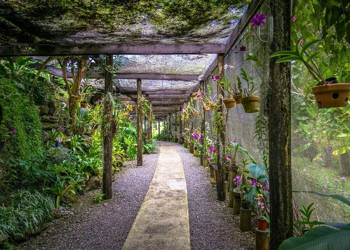

Garden of the Sleeping Giant
The Garden of the Sleeping Giant is a beautiful tropical garden located in the Sabeto area near Nadi. It is famous for its orchid collection, green plants, walking paths, and views of the surrounding mountains. It is a great place for nature lovers who want to experience a quieter side of Fiji away from busy hotels and resorts.

Things to Do
- Explore the tropical gardens.
- Look at the different orchids and flowers.
- Take photographs of the scenery.
- Enjoy a peaceful walk surrounded by nature.